Queenstown · New Zealand
Alpine ski racer · slalom & giant slalom · Queenstown Alpine Ski Team
The short version
Briar races slalom and giant slalom with the Queenstown Alpine Ski Team. Winters at home in New Zealand, northern winters in Europe, and as many days on snow as a season can hold.
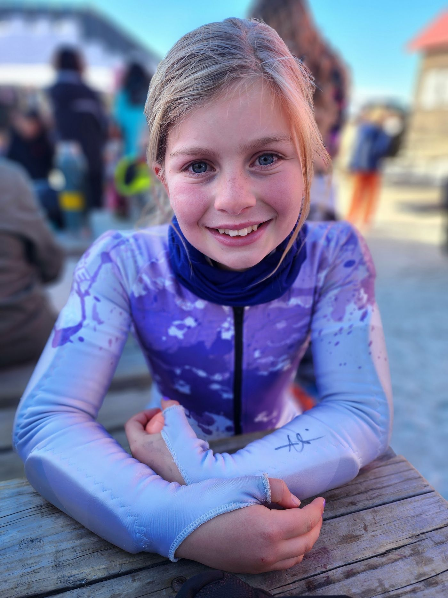
On course
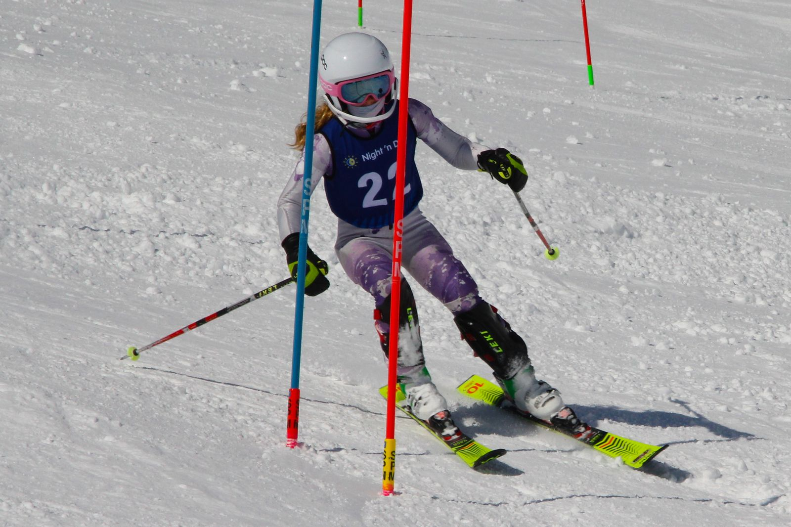
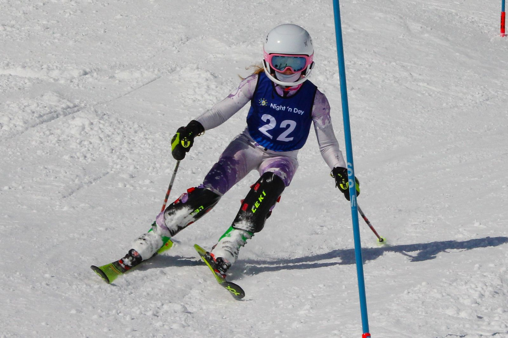
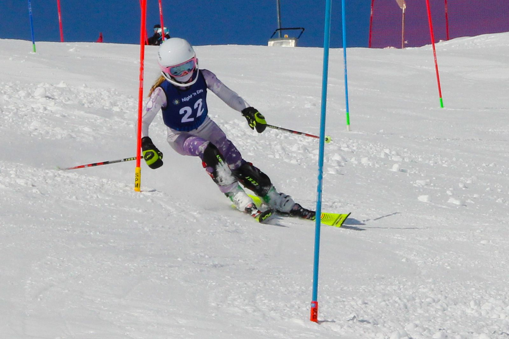
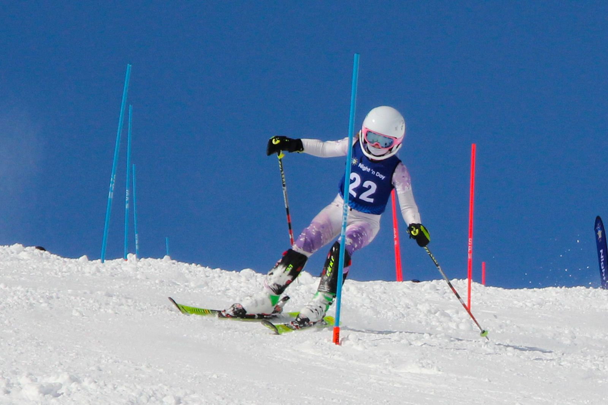
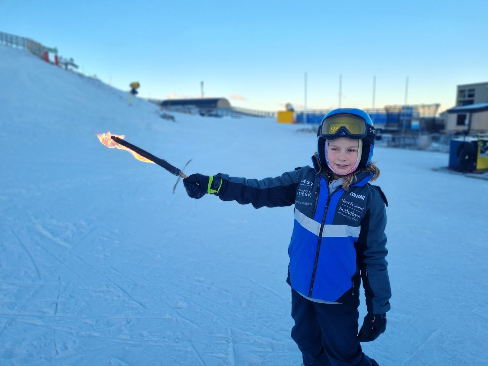
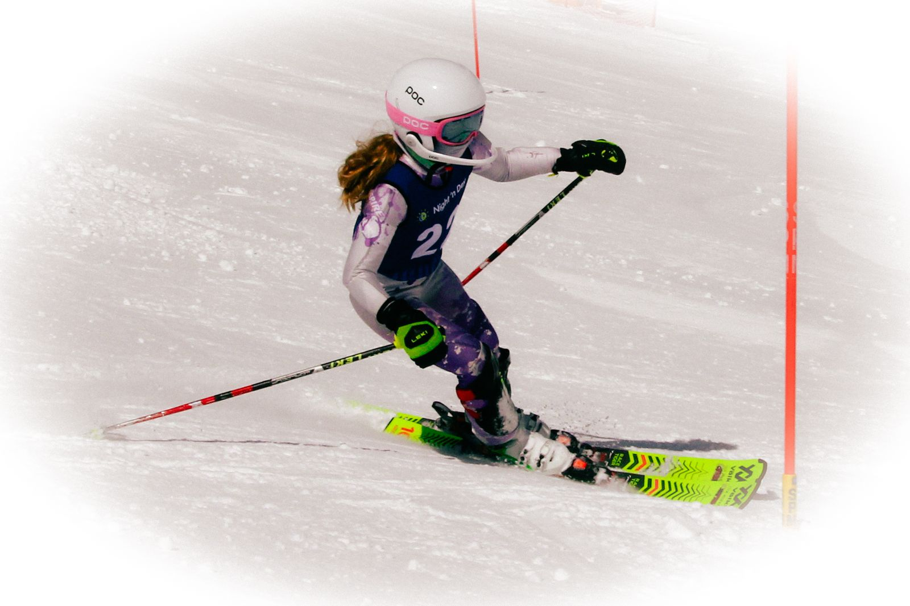
“Some kids count sheep. She counts gates.”
Off the clock
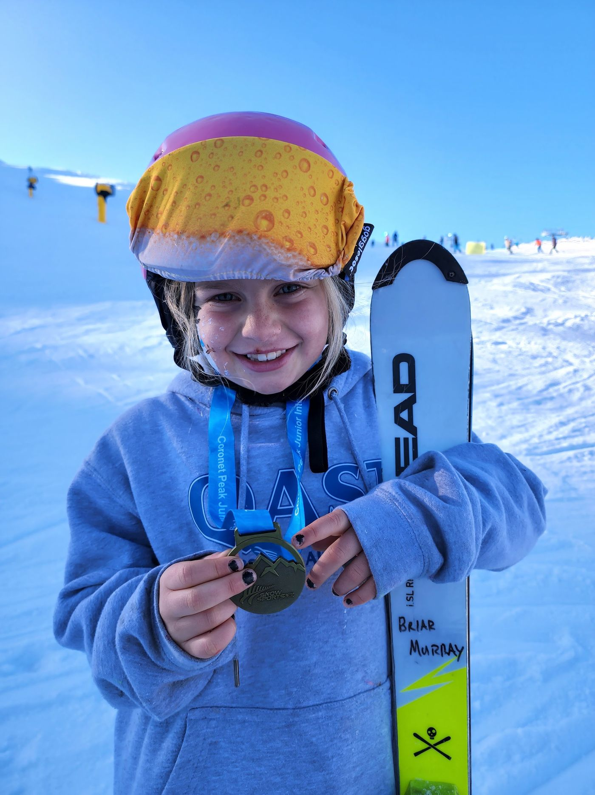
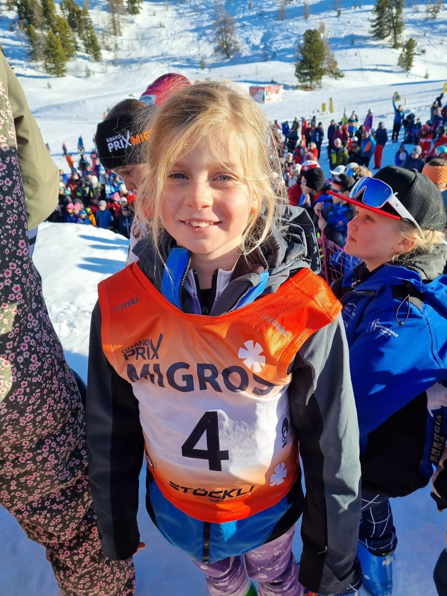
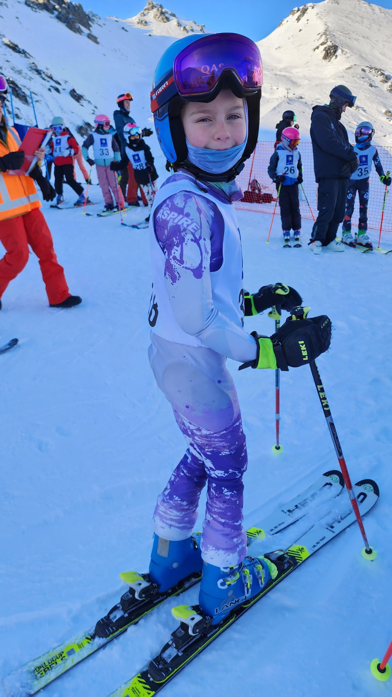
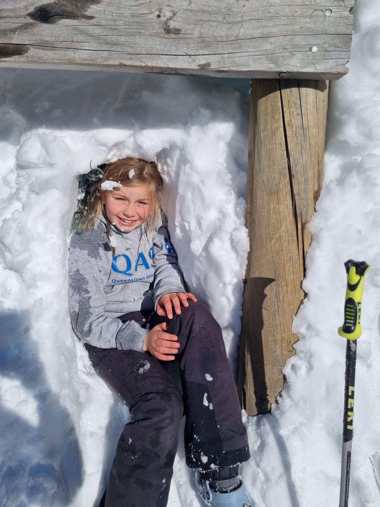